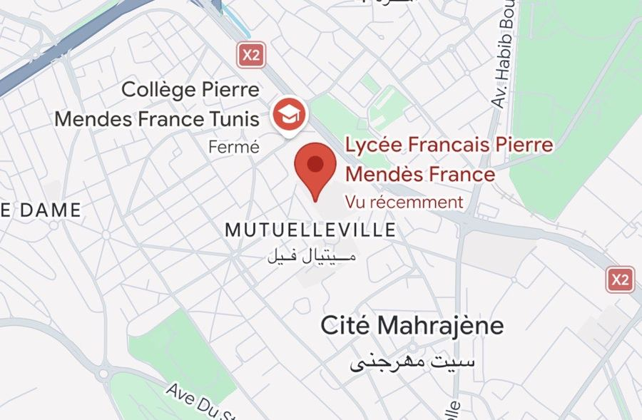

Procès-verbal
Ouverture d’enquête
- Faits
- Double disparition
- Lieu
- Devant PMF, Mutuelleville, Tunis
- Date
- Samedi 26/09 selon les affiches. Vendredi 02/10 selon les caméras. 2024 selon la CAM 04.
- Disparus
- Skandi Kallel « Sneaky », Guermazi « Mergueza »
- Témoins fiables
- 0
- Enquêtrices
- Agente Zeineb, Agente Lemis
- Qualification
- حالة عادية, situation tout à fait normale
Samedi 26 septembre, devant le lycée Pierre Mendès France, deux élèves se sont volatilisés. Sneaky portait une tenue « bagla leha ». Mergueza a été vu pour la dernière fois en robe rouge. Depuis : pas un message, pas une story, pas un vu.
La brigade CVL a saisi les enregistrements de toutes les caméras du quartier. Il y en avait beaucoup. Elles ne sont pas d’accord entre elles.

Consignes à la population
- Si vous croisez une robe rouge, restez calme.
- Ne touchez pas au tuyau du Fiorino.
- Méfiez-vous des bonnets de bain.
- Signalez toute enceinte Bluetooth au volume suspect.
- Toute information : Zeineb & Lemis.
Fait à Tunis, le 06/10/2026.
Les agentes Z. & L.